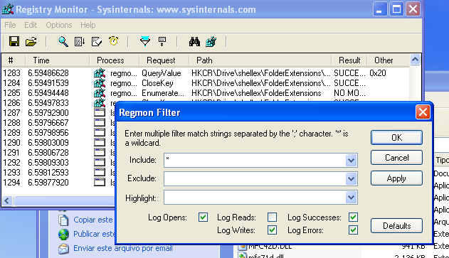
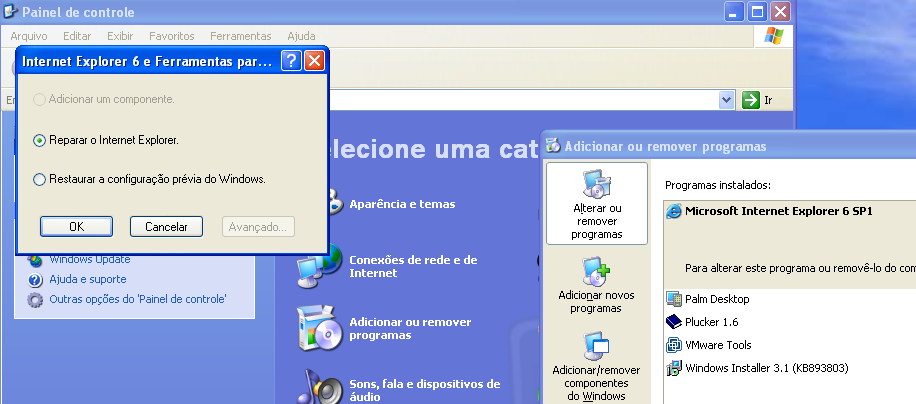
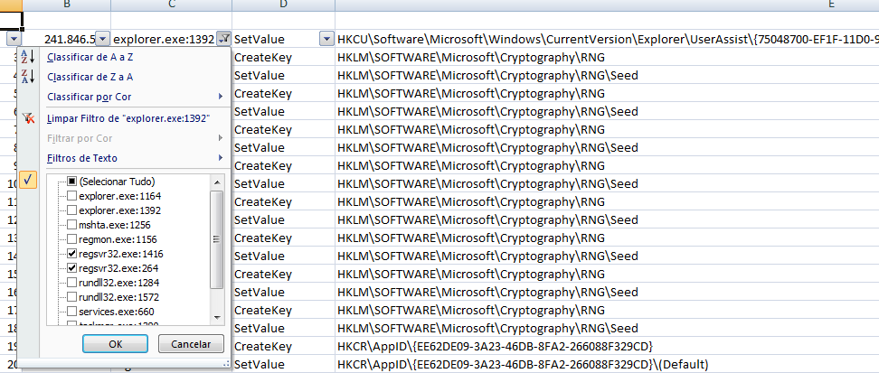
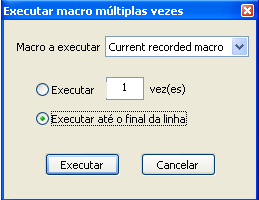
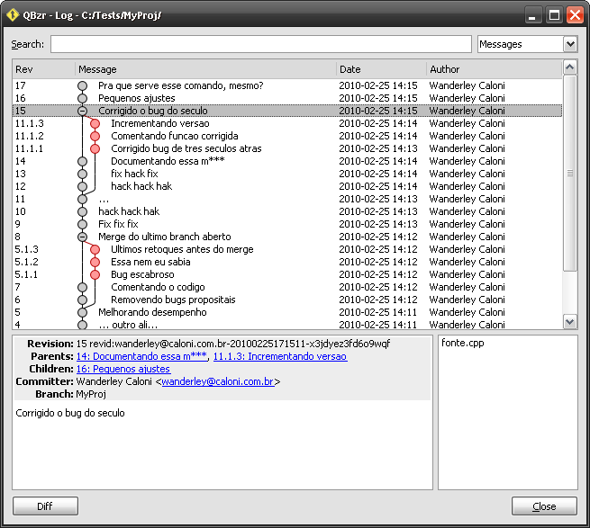
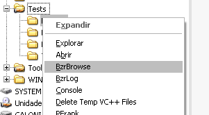
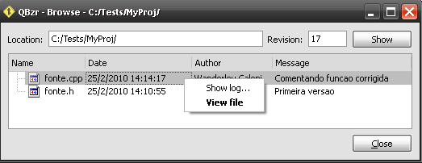
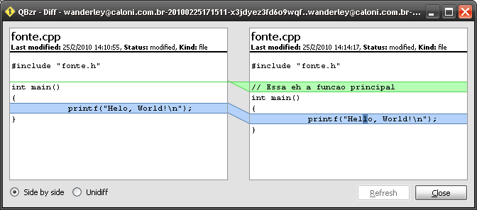

# Correção de bugs instantânea
Caloni, 2010-02-01 [up] [copy]Um programador tarimbado sabe que a melhor situação da vida dele para corrigir um bug é quando esse bug acontece em sua máquina de desenvolvimento, na versão Debug e ainda passo-a-passo. Como nessa situação a correção é um verdadeiro "passeio no parque" (ou na mesa do café) ela tende a quase nunca acontecer. Isso é Murphy Aplicado.
Para quem programa para sistemas, então, só o fato de acontecer no mesmo processo toda vez que ele for executado já é o máximo (quem já programou serviços, plugins, GINAs e afins sabe do que eu estou falando).
Porém, saber que uma determinada situação é mel na chupeta (by Thiago) por si só não adianta de muita coisa. É preciso conhecer as verdadeiras técnicas ninjas que conseguem resolver um bug escabroso num instante, coisa de deixar seu gerente de projetos tão feliz ao ponto dele não botar nenhum defeito na solução.
Dentre as mais conhecidas entre os malloqueiros, temos:
* Comenta-descomenta-comenta
* Faz do zero
Essas duas técnicas são tão úteis e tão fáceis de usar que merecem um artigo a respeito.
Essa técnica milenar corresponde em tirar pedaços do código-fonte que poderiam estar causando o problema até que seja possível criar uma versão em que o problema não ocorra mais. Quando chega-se nesse nível, então volta-se a descomentar o código retirado até que o problema ocorra novamente. O processo é um fluxo de tira-código com volta-código, sendo que é necessário o bom conhecimento do projeto para não gerar outros problemas com a mutilação temporária do projeto.
Se o código começa a ser tão mutilado que chegamos quase em uma versão vazia (sem código), então talvez a melhor forma de atacar o problema seja criar um esqueleto que contenha apenas o código necessário para que ele não faça nada. Isso mesmo. Não fazendo nada, mas instalado. Com isso prova-se que é possível estar lá sem fazer cagadas. A partir daí vai colocando-se o código do projeto real aos poucos no projeto-esqueleto, até que ele apresente o problema. Ou não. Já vi casos em que todo o código foi migrado e o problema sumiu. Ce la vie.
# Restaurando o registro
Caloni, 2010-02-08 <computer> [up] [copy]Algumas ferramentas viram essenciais quando o importante é tempo. As minhas favoritas são: Visual Studio e batch. Com esses dois eu faço virtualmente qualquer coisa que preciso em pouquíssimo tempo. É lógico que, na ausência dessas, alternativas são bem-vindas, como Notepad++, viM, grep, cygwin.
Ontem tive que resolver uma "situação" no cliente, e graças ao bom Deus (ele também é programador) existia um Notepad++ na bagagem que levávamos. Além, é claro, do Excel e do sistema batch do Windows.
O problema consistia basicamente em usar a saída do RegMon para identificar e restaurar algumas modificações que danificavam a instalação do Internet Explorer. O sistema de reparo do IE não existia no cliente, pois ele estava sem Service Pack (bem-vindo ao mundo real), mas podíamos nos guiar através dele na nossa máquina virtual para saber o que faríamos. O estrago era feito durante o registro e/ou desregistro de um componente COM.
Aliás, não, eu não preciso usar o onipresente e onipotente Process Monitor para resolver um detalhezinho no registro. Você talvez precise, já que a Microsoft já tirou o Reg e o File de circulação.
Para iniciar, filtramos os resultados do RegMon para apenas capturar escritas no registro, não importando se falharam ou deram resultado.
A partir disso executamos o registro e desregistro do componente, além da restauração do IE6, responsável por limpar a bagunça. O processo responsável por registrar componentes é o **regsvr32** e o responsável por limpar a bagunça, **rundll32**.
Tendo a saída do RegMon exportada para formato texto, abrimos no Excel e filtramos o conteúdo pelo nome do processo. Note que existem duas instâncias de regsvr32 para usar, pois não sabemos em qual delas é danificado o registro.
Para cada um dos filtros copiamos apenas o endereço da chave alterada para dois arquivos texto: regsvr32.txt e ierestore.txt. Usaremos esse primeiro para encontrar ocorrências no segundo, provando que um modifica o que o outro consertou.
Existe um comando muito simplório em batch Windows que é o aplicativo **find**. Através dele podemos encontrar a ocorrência de uma string em um arquivo. Para transformar todas aquelas linhas do registro do arquivo regsvr32 em comandos find poderíamos elaborar algumas colunas no Excel ou usar o Notepad++ e suas macros, mais rápidas.
Para quem não conhece macros, saiba que elas são muito úteis. Às vezes até mais úteis que "regexes", pois não é necessário pensar muito na expressão a ser usada. Macros apenas repetem os movimentos do teclado que fazemos enquanto as estamos gravando. Por exemplo, eu tenho o meu monte de linhas de registro assim:
HKLM\SOFTWARE\Microsoft\Cryptography\RNG
HKLM\SOFTWARE\Microsoft\Cryptography\RNG\Seed
HKCR\AppID\{EE62DE09-3A23-46DB-8FA2-266088F329CD}
HKCR\AppID\{EE62DE09-3A23-46DB-8FA2-266088F329CD}\(Default)
HKLM\SOFTWARE\Microsoft\Windows\CurrentVersion\Explorer\Browser Helper Objects\{C322BA70-E3E7-4737-821C-D25378A3F830}
HKCR\CLSID\{684E2452-19E1-42CC-9C93-A83044BA1AF2}
HKCR\CLSID\{684E2452-19E1-42CC-9C93-A83044BA1AF2}\Programmable
...
Quero transformar cada linha em um comando find. Iniciou a gravação da macro no início da primeira linha e digito o seguinte (em pseudo-alguma-coisa):
find, espaço, abre aspas, end, fecha aspas, espaço, ierestore.txt, linha abaixo, home
find "HKLM\SOFTWARE\Microsoft\Cryptography\RNG" ierestore.txt
HKLM\SOFTWARE\Microsoft\Cryptography\RNG\Seed
HKCR\AppID\{EE62DE09-3A23-46DB-8FA2-266088F329CD}
Pronto. Parar macro. Terei que repetir isso dois milhões de vezes até o final do arquivo. Ora, então mando o Notepad++ repetir a minha macro até o final do arquivo e adio minha tendinite para os próximos anos.
Só preciso agora renomear meu arquivo para .bat e executar. Posso redirecionar a saída da tela para um terceiro arquivo, de onde irei formatar minha lista de entradas no registro que foram adulteradas por ambos os programas (o registro do componente COM e a restauração do Internet Explorer).
Nesse momento podemos ir tomar café. Bem melhor do que ficar horas e horas dando localizar, copiar, colar em todas as entradas do regsvr.

Terminada a operação, abrimos o terceiro arquivo, retiramos as entradas insignificantes (por exemplo, o gerador de sementes de números randômicos) e os cabeçalhos do comando, algo bem fácil já que se trata do mesmo arquivo.
---------- IERESTORE.TXT ...
A próxima tarefa seria analisar cada entrada e ver se ela é relevante. Essa parte foi manual, mas, encontrado um padrão, listamos rapidamente o que poderia estar dando errado e criamos uma lista de entradas para exportar do registro "sadio" a fim de gerar um .REG que corrigiria sistemas danificados.
Algumas passadas no Notepad++ para eliminar linhas duplicadas e algumas passadas pelo cérebro para eliminar chaves redundantes (chave dentro de chave) e tcharam!
...
HKCR\Interface\{3050F2E3-98B5-11CF-BB82-00AA00BDCE0B}
HKCR\Interface\{3050F2E5-98B5-11CF-BB82-00AA00BDCE0B}
HKCR\Interface\{3050F32D-98B5-11CF-BB82-00AA00BDCE0B}
HKCR\Interface\{3050F357-98B5-11CF-BB82-00AA00BDCE0B}
HKCR\Interface\{3050F35C-98B5-11CF-BB82-00AA00BDCE0B}
HKCR\Interface\{3050F37E-98B5-11CF-BB82-00AA00BDCE0B}
HKCR\Interface\{3050F38C-98B5-11CF-BB82-00AA00BDCE0B}
...
O próximo passo para nossa obra-prima é outra macro que irá reproduzir o comando reg, que pode realizar operações no registro do Windows.
...
reg export HKCR\Interface\{3050F240-98B5-11CF-BB82-00AA00BDCE0B} 3050F240-98B5-11CF-BB82-00AA00BDCE0B.reg
reg export HKCR\Interface\{3050F25A-98B5-11CF-BB82-00AA00BDCE0B} 3050F25A-98B5-11CF-BB82-00AA00BDCE0B.reg
reg export HKCR\Interface\{3050F25E-98B5-11CF-BB82-00AA00BDCE0B} 3050F25E-98B5-11CF-BB82-00AA00BDCE0B.reg
reg export HKCR\Interface\{3050F2E3-98B5-11CF-BB82-00AA00BDCE0B} 3050F2E3-98B5-11CF-BB82-00AA00BDCE0B.reg
reg export HKCR\Interface\{3050F2E5-98B5-11CF-BB82-00AA00BDCE0B} 3050F2E5-98B5-11CF-BB82-00AA00BDCE0B.reg
reg export HKCR\Interface\{3050F32D-98B5-11CF-BB82-00AA00BDCE0B} 3050F32D-98B5-11CF-BB82-00AA00BDCE0B.reg
...
E o último passo é juntar toda essa galera em um arquivo só.
copy *.reg ierestore.reg
Claro, não se esqueça de retirar os cabeçalhos duplicados (Windows Registry Editor Version X.XX). E Voilà! Fácil, não? Não?! Bom, então é por isso que eu sou bem pago =)
Visual Studio e batch: http://www.microsoft.com/WINDOWS/
Visual Studio e batch. Com esses dois eu faço virtualmente qualquer coisa que preciso em pouquíssimo tempo. É lógico que, na ausência dessas, alternativas são bem-vindas, como Notepad++: http://notepad-plus.sourceforge.net/uk/site.htm
Visual Studio e batch. Com esses dois eu faço virtualmente qualquer coisa que preciso em pouquíssimo tempo. É lógico que, na ausência dessas, alternativas são bem-vindas, como Notepad++, viM: http://www.vim.org/
Visual Studio e batch. Com esses dois eu faço virtualmente qualquer coisa que preciso em pouquíssimo tempo. É lógico que, na ausência dessas, alternativas são bem-vindas, como Notepad++, viM, grep: http://gnuwin32.sourceforge.net/
Visual Studio e batch. Com esses dois eu faço virtualmente qualquer coisa que preciso em pouquíssimo tempo. É lógico que, na ausência dessas, alternativas são bem-vindas, como Notepad++, viM, grep, cygwin: http://www.cygwin.com/
# Bazaar gráfico
Caloni, 2010-02-25 [up] [copy]Bom, já que por enquanto os assuntos de macho estão em falta (acabei de voltar de férias), apresento-lhes o maravilhoso mundo do Bazaar ~~para boiolas~~ _user-friendly_!
Ele é leve, vem ~~enrustido~~ embutido na última versão e pode economizar alguns _page ups/downs_ no _prompt_ do DOS. Ah, sim, antes que comentem, eu não uso o Tortoise for Bazaar porque instalar _shell extensions_, só os muito bem feitos. (Do contrário, bem-feito para quem instalou.)
Para exibir a lista de comandos "amigáveis", digite no _prompt_ os comandos do Bazaar filtrando-os para os que começam com "**q**":
bzr help commands | grep ^q.* qadd GUI for adding files or directories. [qbzr] qannotate Show the origin of each line in a file. [qbzr] qbranch Create a new copy of a branch. [qbzr] qbrowse Show inventory. [qbzr] qcat View the contents of a file as of a given revision. [qbzr] qcommit GUI for committing revisions. [qbzr] qconfig Configure Bazaar. [qbzr] qdiff Show differences in working tree in a GUI window. [qbzr] qgetnew Creates a new working tree (either a checkout or full branch) [qbzr] qgetupdates Fetches external changes into the working tree [qbzr] qinfo [qbzr] qinit Initializes a new (possibly shared) repository. [qbzr] qlog Show log of a repository, branch, file, or directory in a Qt window. [qbzr] qmerge Perform a three-way merge. [qbzr] qpull Turn this branch into a mirror of another branch. [qbzr] qpush Update a mirror of this branch. [qbzr] qrevert Revert changes files. [qbzr] qtag Edit tags. [qbzr]
Os que eu mais uso no dia-a-dia são:
qlog e qbrowse
Diversão garantida. Por meio destes simples comandos podemos ver o histórico de commits e navegar pela árvore de pastas e arquivos com a anotação do último commit para cada elemento. Só para ter uma ideia de quanto uso isso, transformei-os em opções do Explorer.
Além da utilidade básica, de quebra, o qbrowse pode te levar para um qlog filtrado, e o qlog pode te levar a um diff gráfico, que é o próximo comando que eu iria mostrar.
qdiff
Coisa linda de Deus. Existem dois modos de exibição, mas o padrão já é show de bola, mostrando as mudanças em todos os arquivos de um commit de uma só vez ou do arquivo/pasta especificado pelo comando. É lógico que é possível especificar qualquer faixa de commits que você quiser ver.
Uma desvantagem desse comando é que ele oculta o resto das linhas do fonte e não mostra de jeito nenhum (pelo menos não descobri ainda como fazer isso). Sendo assim, para uma análise mais detalhada das diferenças no código-fonte sempre use um editor externo que consiga comparar arquivos inteiros (eu uso o WinMerge). Você pode colocar esse comando na forma de um diff personalizado, com o uso do qconfig.

Bônus
Para quem não sabe fazer comandos de contexto no Explorer sem instalar Shell Extensions, deem uma olhada no REG exportado. Bom proveito.
Tortoise for Bazaar porque instalar _shell extensions_: http://en.wikipedia.org/wiki/Shell_extension#Extensibility
[2010-01] [2010-03]